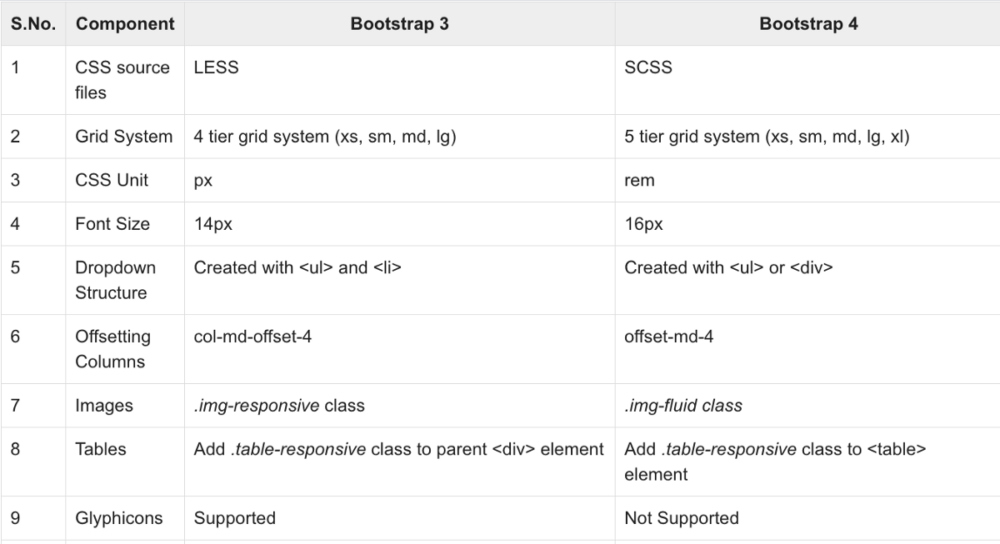

What are the advantages of Bootstrap?
Easy to prevent repetitions among multiple projects. Responsive design that can be used to adapt screen sizes and choose what shows and what doesn't on any given device. Maintaining consistency among projects when using multiple developer teams. Quick design of prototypes.
What is a Bootstrap Container, and how does it work?
In Bootstrap, container is used to set the content's margins dealing with the responsive behaviors of your layout. It contains the row elements and the row elements are the container of columns (known as grid system). The container class is used to create boxed content.
What are the default Bootstrap text settings?
Bootstrap 4 uses a default font-size of 16px, and its line-height is 1.5. The default font-family is "Helvetica Neue", Helvetica, Arial, sans-serif. In addition, all <p> elements have margin-top: 0 and margin-bottom: 1rem (16px by default).
What do you know about the Bootstrap Grid System?
Bootstrap's grid system uses a series of containers, rows, and columns to layout and align content. It's built with flexbox and is fully responsive. Below is an example and an in-depth look at how the grid comes together.
What is the difference between Bootstrap 4 and Bootstrap 5
What is a Button Group, and what is the class for a basic Button Group?
“Button Groups” in Bootstrap is a class of name “btn-group” which is used to create series of buttons in groups (without spaces) vertically or horizontally. This is the basic syntax of the button group class where each button has its own class of “btn”
How can you use Bootstrap to make thumbnails?
A thumbnail is a small image that represents a larger image. Bootstrap has an easy way to do this with thumbnails. Bootstrap's . thumbnail class is used to show linked images in grids (grid system), a thumbnail is created using class .
In Bootstrap 4, what is flexbox?
The biggest difference between Bootstrap 3 and Bootstrap 4 is that Bootstrap 4 now uses flexbox, instead of floats, to handle the layout. The Flexible Box Layout Module, makes it easier to design flexible responsive layout structure without using float or positioning.
How can one create an alert in Bootstrap?
Practically shown in example.
What is a bootstrap card and how would you create one?
A Bootstrap card component is a content container. It incorporates options for images, headers, and footers, a wide variety of content, contextual background colors, and excellent display options. Bootstrap cards replace old Bootstrap panels, Bootstrap wells, and Bootstrap thumbnails.
Practically shown in example.